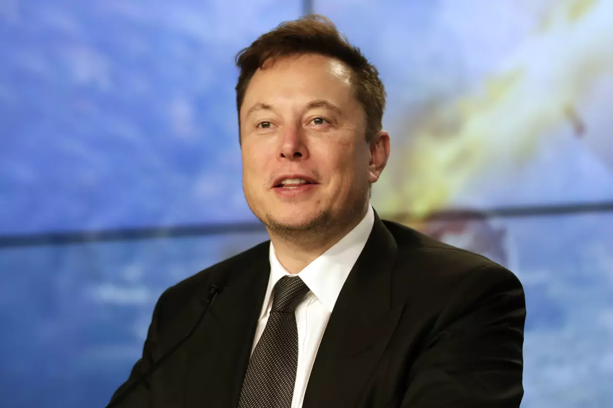

The Biography Of Elon Musk
The Entrepreneur

Date of Birth
June 24, 1971
Place of Birth
Pretoria, South Africa
Mother details
Name: Maye Musk
Ocupation: A Model and dietitian
Father details
Name: Errol Musk
Ocupation: An Engineer
Education
- Pretoria University High School: Created a video game Blastar at age of 12
- University of Pennsylvania: Degree in economics and physics in 1997
- Moved to Canada in 1992 to attend college
Career
- After college: Moved to California to pursue a career in technology and entrepreneurship
- Co-founded his first company, Zip2
Achievements
- Founded SpaceX: 2002
- Co-founded Tesla, Inc.: 2004
- co-founded Neuralink: In 2016 a neurotechnology company that aims to integrate the human brain with computers
Personal Life
- Married three times: Has seven children
- Demanding work ethic: Works over 100 hours per week.
- Active presence on social media: Frequently shares updates about his companies and projects
Net Worth
- Estimated to be over: $200 billion
Legacy
Elon Musk is widely recognized as one of the most successful and influential entrepreneurs of our time. His innovative ideas and vision for the future have inspired a generation of entrepreneurs, scientists, and engineers. Love him or hate him, Elon Musk is undeniably a force to be reckoned with.
Read more about Elon Musk